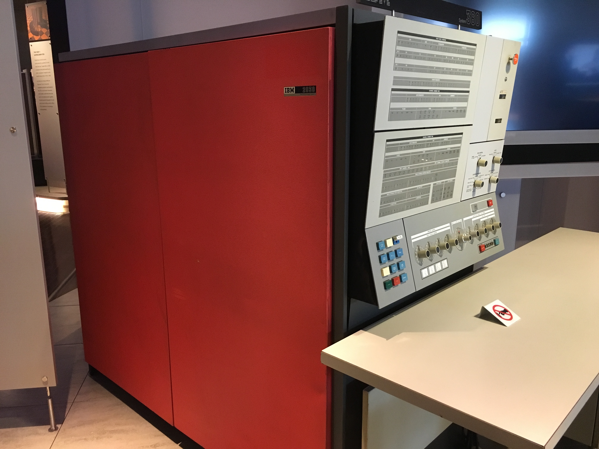

IBM S/360
Announced on April 7, 1964, the IBM System/360 (S/360) was a groundbreaking family of mainframe computers that unified commercial and scientific computing under a single, compatible architecture. Named "360" to symbolize its all-encompassing 360-degree scope of applications, the system allowed businesses to upgrade from entry-level models to high-end machines without rewriting software or replacing peripherals. Developed through a massive $5 billion investment, the S/360 standardized the 8-bit byte, popularized microcode, and pioneered the modern concept of computer architecture by separating a machine's design from its physical hardware, setting the foundation for mainframe computing for decades to come.